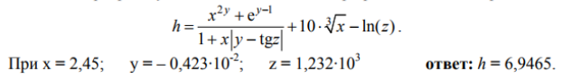
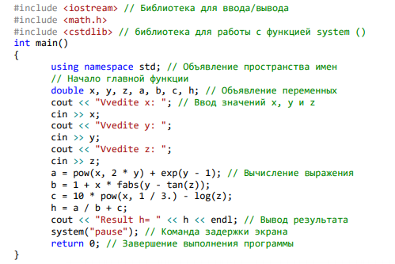

Функции для расчета математических выражений находятся в библиотеке math.lib (подключение библиотеки: #include ). Все аргументы в тригонометрических функциях задаются в радианах. Параметры и аргументы всех остальных функций имеют тип double (кроме abs(x)).
| Математическая функция | Функция библиотеки math.lib | Описание |
|---|---|---|
| |x| | abs(x) | Вычисление абсолютного значения(только для целых чисел!) |
| |x| | fabs(x) | Вычисление абсолютного значения |
| √x | sqrt(x) | Вычисление квадратного корня х |
| xy | pow(x, y) | Возведение в х в степень у |
| sin(x) | sin(x) | Вычисление синуса х |
| cos(x) | cos(x) | Вычисление косинуса х |
| tg(x) | tan(x) | Вычисление тангенса х |
| arccos(x) | acos(x) | Вычисление аркосинуса х |
| arctg(x) | atan(x) | Вычисление арктангенса х |
| ex | exp(x) | Вычисление экспоненты числа х |
| ln(x) | log(x) | Вычисление натурального логарифма х |
| lg10(x) | log10(x) | Вычисление десятичного логарифма х |
| Округление к большему | ceil(x) | Функция возвращает действительное значение, соответсвующее наименьшему целому числу, которое больше или равно х |
| Округление к меньшему | floor(x) | Функция возвращает действительное значение, соответсвующее наибольшему целому числу, которое меньше или равно х |
| Остаток от деления х на у | fmod(x, y) | Функция возвращает действительное значение, соответсвующее остатку от целочисленного деления х на у |
Например:
double z = exp(1)+exp(x*x)+exp(2*pow(x,3)); //z = e + ex2+e2x3
double z1 = fmod(5,2) // z1 = 5%2 => z1 = {5/2} = 1
double z2 = ceil(5.6) // z2 = 6
double z3 = floor(-5.6) // z2 = -6
Написать программу вычисления линейного арифметического выражения:
Код программы для решения данной задачи будет выглядеть следующим образом:
